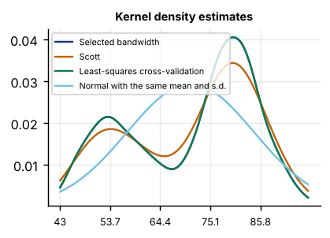

Run this model on your own data in Open Econometric Systems →
Step 1The question and the model
What does the distribution look like, and is it one hump or several? The estimate is
The bandwidth \(h\) is chosen by a rule (Scott, Silverman), by least-squares cross-validation, or by the Sheather and Jones (1991) plug-in, which is close to the optimum for non-normal densities. Silverman (1981) tests the null of at most \(k\) modes through the critical bandwidth, the smallest \(h\) at which the estimate has \(k\) modes, and a smoothed bootstrap.
How to write it: the model
We estimate the density of waiting times between eruptions with a Gaussian kernel. We compare the Scott, Silverman, cross-validation and Sheather-Jones bandwidths, take the Sheather-Jones value, report the modes and test the null of a single mode with Silverman's (1981) smoothed bootstrap. We check the choice of bandwidth in a simulation with a known two-component mixture.
Step 2Load the data
import numpy as np
import pandas as pd
import oes_engine as oes # pip install -e open-econometric-systems/oes-engine
d = pd.read_csv("faithful.csv")
print(len(d), "eruptions; waiting time (minutes): mean", round(d.waiting.mean(), 1), ", s.d.", round(d.waiting.std(), 1), ", range", d.waiting.min(), "to", d.waiting.max())
print("share of waits below 65 minutes:", round((d.waiting < 65).mean(), 2))
def s(res, label):
return next(x["value"] for x in res["summary"] if x["label"] == label)272 eruptions; waiting time (minutes): mean 70.9 , s.d. 13.6 , range 43 to 96 share of waits below 65 minutes: 0.35
How to read it
There are 272 eruptions. The waiting time averages 70.9 minutes with a standard deviation of 13.6, between 43 and 96 minutes, and 35% of the waits are shorter than 65 minutes. The median is 76.0, above the mean.
Step 3Estimate the density
spec = dict(x="waiting", reps=200, seed=1)
r = oes.run("kde", d.to_csv(index=False), spec)
oes.summary(r)
oes.show(r, "Bandwidth selectors")Observations: 272
Bandwidth: 2.6374
Modes: 2
Sheather-Jones bandwidth: 2.6374
Modes test p-value: 0.0
Bandwidth selectors
Bandwidth Modes Peak density
Selector
Scott (1.06 s n^-1/5) 4.6965 2 0.0344
Silverman (0.9 min(s, IQR/1.349) n^-1/5) 3.9876 2 0.0366
Sheather-Jones plug-in 2.6374 2 0.0405
Least-squares cross-validation 2.6133 2 0.0406
Note: Gaussian kernel, 272 observations. Normal-reference rules (Scott, Silverman) over-smooth multimodal data; Sheather-Jones and cross-validation adapt to the shape.How to read it
The four bandwidth selectors range from 2.61 (cross-validation) and 2.64 (Sheather-Jones) to 3.99 (Silverman) and 4.70 (Scott), and all four estimates have two modes. The normal-reference rules smooth more and give a lower peak (0.034 and 0.037 against 0.041), which is what is expected when the density is not normal. We take the Sheather-Jones bandwidth, 2.64 minutes. Silverman's test of a single mode has a critical bandwidth of 8.07 and p = 0.00: none of the 200 bootstrap samples from a single-mode density needs more than one mode at that bandwidth, so one mode is rejected.
Step 4Modes and the normal comparison
oes.show(r, "Test of the number")
oes.show(r, "Density estimate")
oes.plot(r)
print("normal fit: mean", round(d.waiting.mean(), 1), ", s.d.", round(d.waiting.std(), 1), "-> the normal density has its peak at the mean, where the kernel estimate is low")Test of the number of modes
Statistic p-value Detail
Test
Silverman test: at most 1 mode 8.068 0.0 Critical bandwidth h_crit = 8.068; p is the share of 200 smoothed bootstrap samples that need more than 1 mode(s) at h_crit
Density estimate and modes
Value
Quantity
Bandwidth used 2.6374
Modes at this bandwidth 2.0000
Mode 1 at 53.1995
Mode 2 at 80.1083
Mean 70.8971
Median 76.0000
Skewness -0.4163
Excess kurtosis -1.1426
Area under the estimate (check) 1.0000
normal fit: mean 70.9 , s.d. 13.6 -> the normal density has its peak at the mean, where the kernel estimate is low
How to read it
The modes are at 53.2 and 80.1 minutes: short waits of about 53 minutes and long waits of about 80. The distribution is skewed to the left (skewness -0.42) with an excess kurtosis of -1.14, flatter than a normal distribution. A normal density with the same mean and standard deviation would peak at 70.9 minutes, between the two modes, and misses the structure entirely. The area under the estimate is 1.000.
Step 5Robustness: the bandwidth
print("bandwidth modes")
for h in (1, 2, 2.64, 4, 6, 8, 12):
e = oes.run("kde", d.to_csv(index=False), dict(x="waiting", bandwidth=h, reps=0))
print(f"{h:8.2f} {s(e, 'Modes'):7d}")
e1 = oes.run("kde", d.to_csv(index=False), dict(x="waiting", modes=2, reps=200, seed=1))
print("test of at most two modes: p =", s(e1, "Modes test p-value"))bandwidth modes
1.00 8
2.00 2
2.64 2
4.00 2
6.00 2
8.00 2
12.00 1
test of at most two modes: p = 0.73How to read it
The number of modes depends on the bandwidth in the way the test uses: 8 modes at h = 1 (noise), two modes for every bandwidth from 2 to 8, and one mode from h = 12. The critical bandwidth for a single mode (8.07) is therefore far above the selected one (2.64). The test of at most two modes gives p = 0.73, so there is no evidence of more than two modes.
Step 6Diagnostics: bandwidth selectors in a simulation
rng = np.random.default_rng(5)
def mix(n):
return np.where(rng.random(n) < .5, rng.normal(-1.5, .5, n), rng.normal(1.5, .5, n))
grid = np.linspace(-5, 5, 400); f0 = .5 * np.exp(-0.5 * ((grid + 1.5) / .5) ** 2) / (.5 * np.sqrt(2 * np.pi)) + .5 * np.exp(-0.5 * ((grid - 1.5) / .5) ** 2) / (.5 * np.sqrt(2 * np.pi))
hs = np.linspace(0.06, 0.6, 55); ise = np.zeros(len(hs)); res = {}
for _ in range(20):
x = mix(500)
for i, h in enumerate(hs):
f = np.exp(-0.5 * ((grid[:, None] - x[None, :]) / h) ** 2).sum(1) / (500 * h * np.sqrt(2 * np.pi))
ise[i] += np.sum((f - f0) ** 2) * (grid[1] - grid[0])
e = oes.run("kde", pd.DataFrame(dict(x=x, i=np.arange(500))).to_csv(index=False), dict(x="x", reps=0))
for row in e["tables"][0]["rows"]:
res.setdefault(row[0], []).append((row[1], row[2]))
print("true density: equal mixture of N(-1.5, 0.5) and N(1.5, 0.5), n = 500, 20 samples")
print("bandwidth minimising the integrated squared error:", round(hs[np.argmin(ise)], 2))
print("selector mean bandwidth share with exactly two modes")
for k, v in res.items():
v = np.array(v, float)
print(f"{k:42s} {v[:,0].mean():8.3f} {np.mean(v[:,1] == 2):20.2f}")true density: equal mixture of N(-1.5, 0.5) and N(1.5, 0.5), n = 500, 20 samples bandwidth minimising the integrated squared error: 0.19 selector mean bandwidth share with exactly two modes Scott (1.06 s n^-1/5) 0.483 1.00 Silverman (0.9 min(s, IQR/1.349) n^-1/5) 0.410 1.00 Sheather-Jones plug-in 0.186 0.90 Least-squares cross-validation 0.173 0.75
How to read it
For an equal mixture of N(-1.5, 0.5) and N(1.5, 0.5) with 500 observations, the bandwidth that minimises the integrated squared error is 0.19. Sheather-Jones gives 0.186 on average and cross-validation 0.173, close to the optimum, while Scott (0.48) and Silverman (0.41) are more than twice too large. The data-driven bandwidths pay for the closeness with some spurious extra modes: exactly two modes appear in 90% of samples for Sheather-Jones and in 75% for cross-validation, against 100% for the two over-smoothing rules. A mode in a kernel estimate needs to be backed by a test, as above.
Step 7Write the results
How to write it: results
We estimate the density of the waiting time between eruptions of Old Faithful (272 eruptions) with a Gaussian kernel and the Sheather-Jones bandwidth of 2.64 minutes. The density has two modes, at 53.2 and 80.1 minutes, and Silverman's smoothed-bootstrap test rejects a single mode (critical bandwidth 8.07, p < 0.01) but not two (p = 0.73). The normal-reference bandwidths (Scott 4.70, Silverman 3.99) give the same two modes with lower peaks. A normal distribution fitted to the data peaks at 70.9 minutes, between the modes. In a simulation, the Sheather-Jones and cross-validation bandwidths are close to the optimal one, while the normal-reference rules are more than twice too large.
References. Silverman (1981), Journal of the Royal Statistical Society B; Silverman (1986), Density Estimation for Statistics and Data Analysis; Sheather and Jones (1991), Journal of the Royal Statistical Society B; Azzalini and Bowman (1990), Journal of the Royal Statistical Society C.